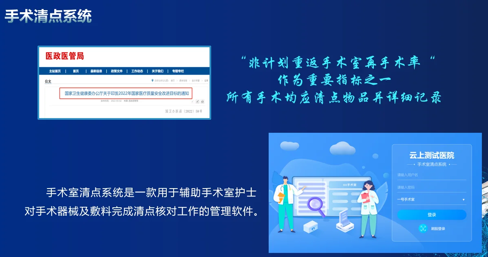
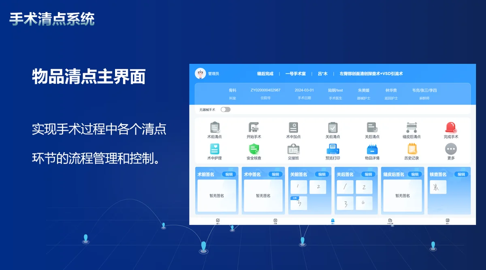
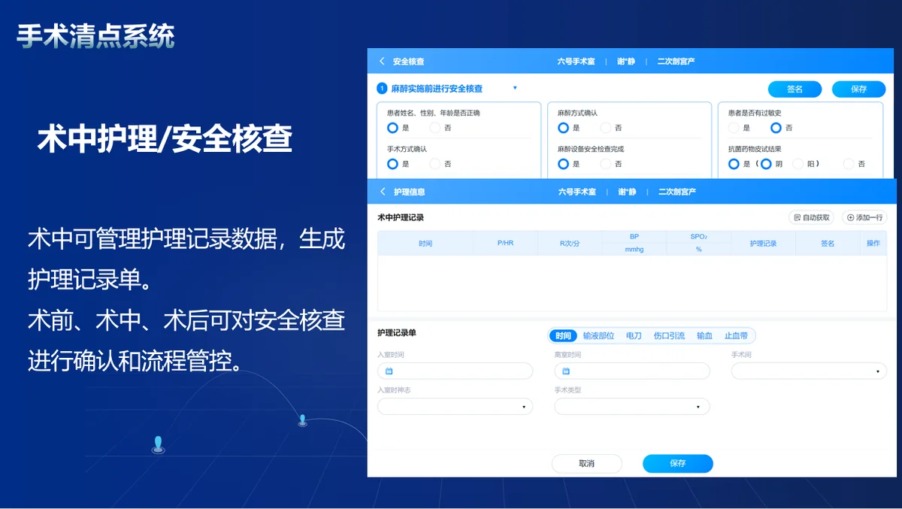
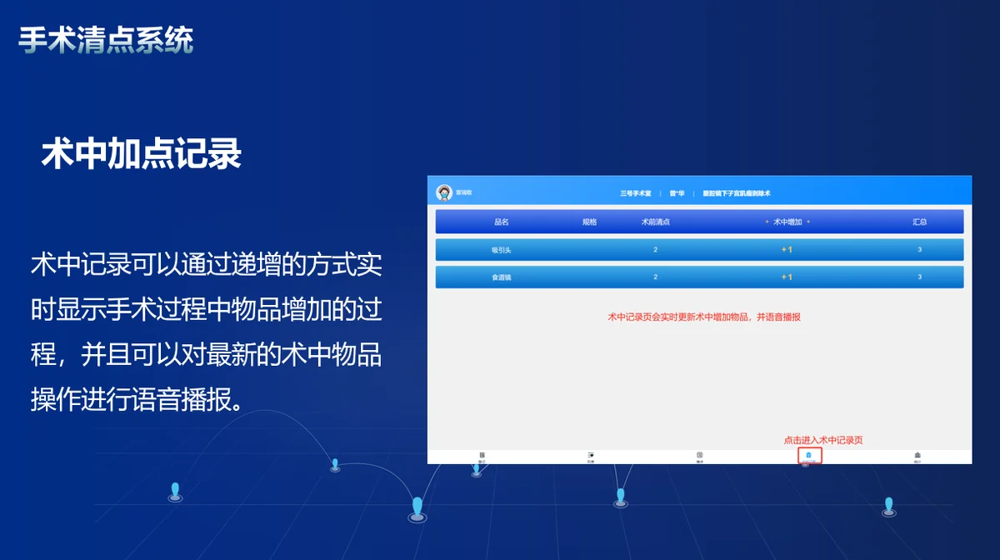
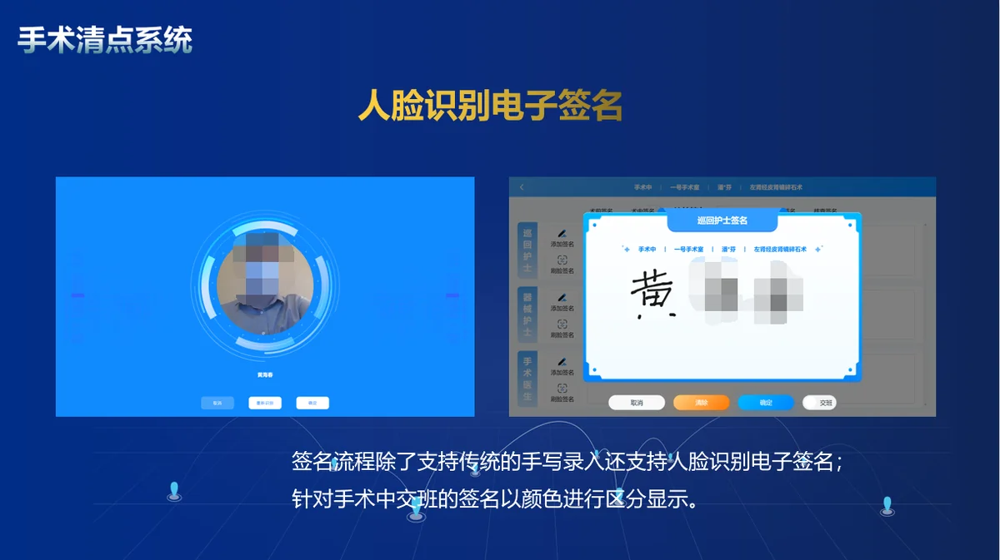
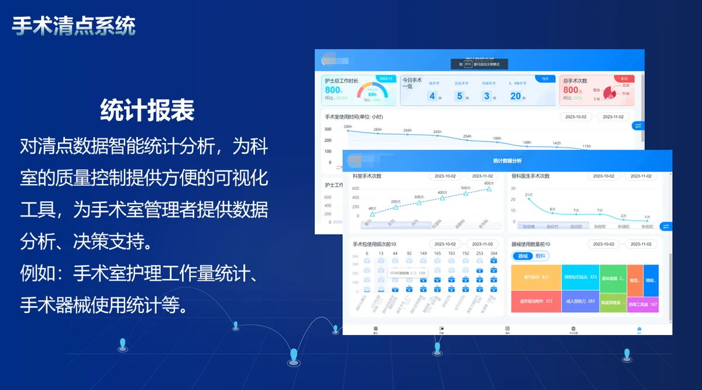

手术室物品清点是关系手术室质量控制的重要制度。为避免手术器械及敷料遗留在患者体腔内，巡回护士与器械护士需在手术过程中共同对器械、敷料和特殊用品进行多次清点核对。






系统围绕“术前、术中、术后”关键节点构建电子化清点闭环，通过标准化流程、关键步骤校验、清点记录留痕与多角色协同，帮助手术室建立可执行、可追溯、可复盘的清点机制。
| 适用对象 | 手术室护士团队、护理部、医务科与质控部门 |
|---|---|
| 部署方式 | 院内部署 / 私有化部署 |